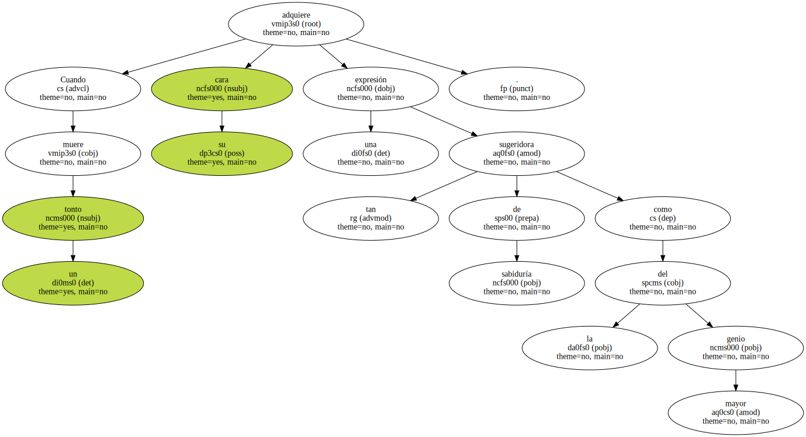
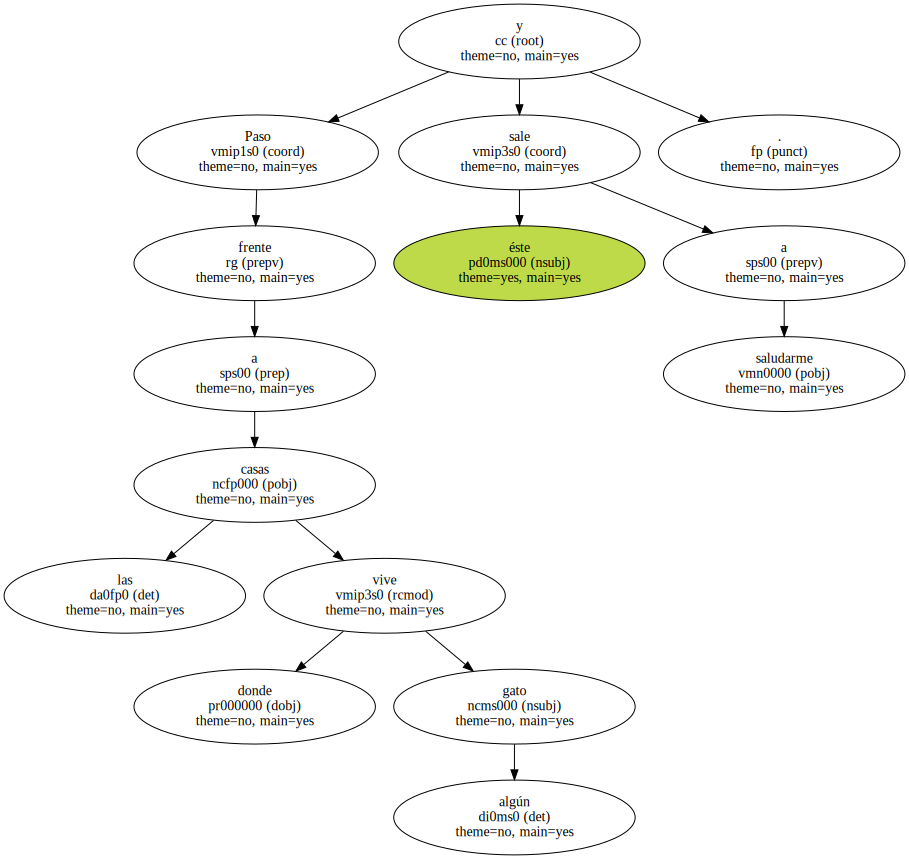
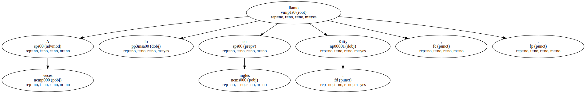
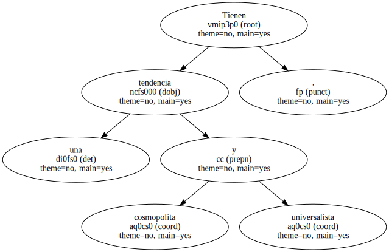
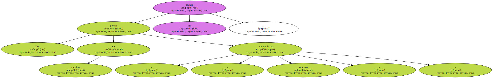
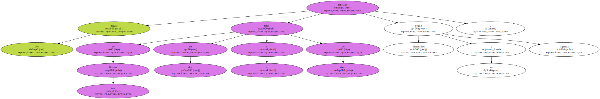
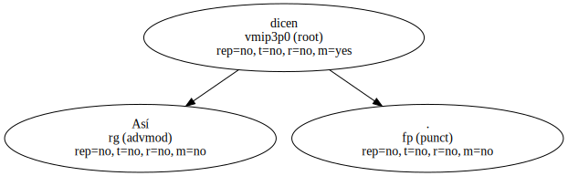
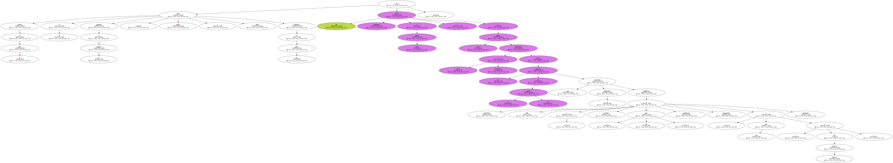
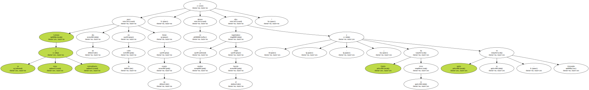
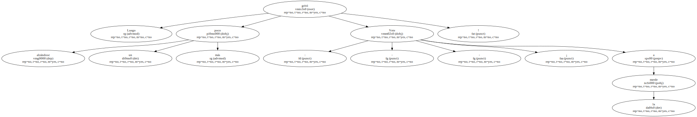

Cuando un tonto muere su cara adquiere una expresión tan sugeridora de sabiduría como la del mayor genio.
Paso frente a las casas donde vive algún gato y éste sale a saludarme.
A veces lo llamo en inglés : Kitty ,.
Pero si lo llamo con el siseo español - bsss , - acude mejor.

Tienen una tendencia cosmopolita y universalista.
Los perros en cambio - - nacionalistas obtusos - - me gruñen.
Los mayas fabrican telas de tres lluvias o de dos o de cinco según su diafanidad y ligereza.
Así dicen.
Ni verdura en la tierra ni esperanza en los corazones , decía Ortega y Gasset hablando de una aldea y eso podría entenderse a toda Castilla y a toda España esquilmada física y moralmente por los patriotas de la guerra civil que pervirtieron el patriotismo haciéndolo fraudulento , falaz y funerario ( tres efes ) o sacristanesco , sanguinario y saturniano ( tres eses y que Saturno perdone ).
Lerroux ya viejo y valetudinario pasó un día en la calle frente a un espejo , se detuvo e irguiéndose a medias sobre el bastón dijo : - - ¡ Quién te ha visto y quién te ve , Alejandro.
Luego alzándose un poco más gritó : - - ¡ Vete a la merde.
